2025 – 2027
LYCÉE TURGOT, PARIS
BTS Services informatiques aux organisations
Option A - Solutions d'infrastructure, systèmes

Avec un intérêt marqué pour les systèmes, les réseaux et la cybersécurité, je développe continuellement mes compétences afin de répondre aux exigences actuelles en matière de sécurité informatique et d'optimisation des environnements IT.
Je m'appelle Asvin Kangathevan, j'ai 19 ans et je suis actuellement en première année de BTS SIO (Services Informatiques aux Organisations), spécialité SISR (Solutions d'Infrastructure, Systèmes et Réseaux), au Lycée Turgot à Paris. Ce portfolio s'inscrit dans le cadre de ma formation et reflète mon parcours, mes compétences acquises, ainsi que mes objectifs professionnels.
Passionné depuis toujours par l'informatique, j'ai développé un intérêt particulier pour la cybersécurité et ses enjeux dans un monde numérique en constante évolution. Au fil de ma formation, j'ai acquis des compétences solides en : Gestion et sécurisation des réseaux, Administration des systèmes, Mise en place d'infrastructures informatiques sécurisées, Utilisation d'outils professionnels de configuration, de supervision et de protection des environnements IT.
Je complète également mes connaissances en programmation, virtualisation et gestion des infrastructures cloud, des domaines devenus indispensables dans le secteur de la cybersécurité.
Déterminé à progresser et à faire de ma passion mon métier, je suis constamment à la recherche de nouvelles connaissances et d'expériences pratiques pour affiner mon expertise. Mon objectif est de devenir un acteur engagé de la cybersécurité, capable de répondre efficacement aux défis de demain.
BTS Services informatiques aux organisations
Option A - Solutions d'infrastructure, systèmes
BTS Services informatiques aux organisations
Option B - Solutions logicielles et applications métiers
Bac Pro Systèmes Numériques
Option RISC
Stage — Administration systèmes et réseaux
Programmation Web
Maintenance Informatique
 Réseau informatique
Réseau informatique
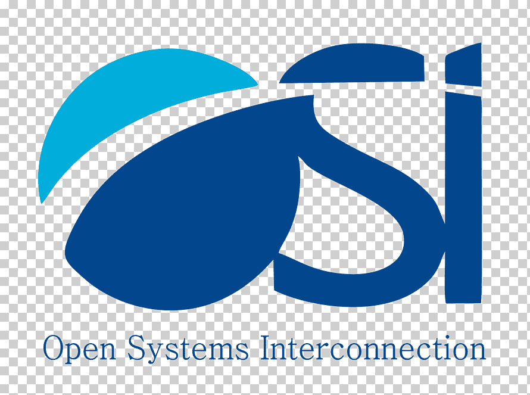
Modèle OSI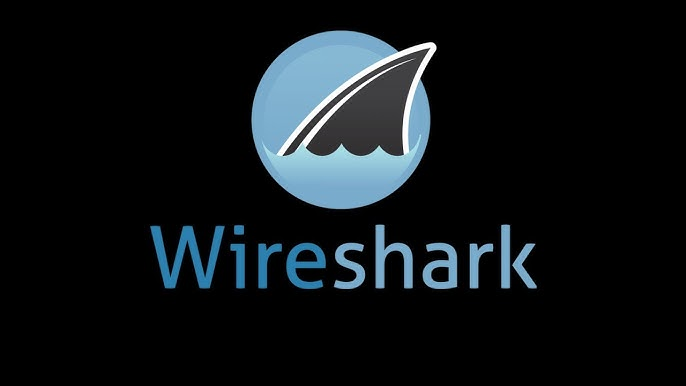
Wireshark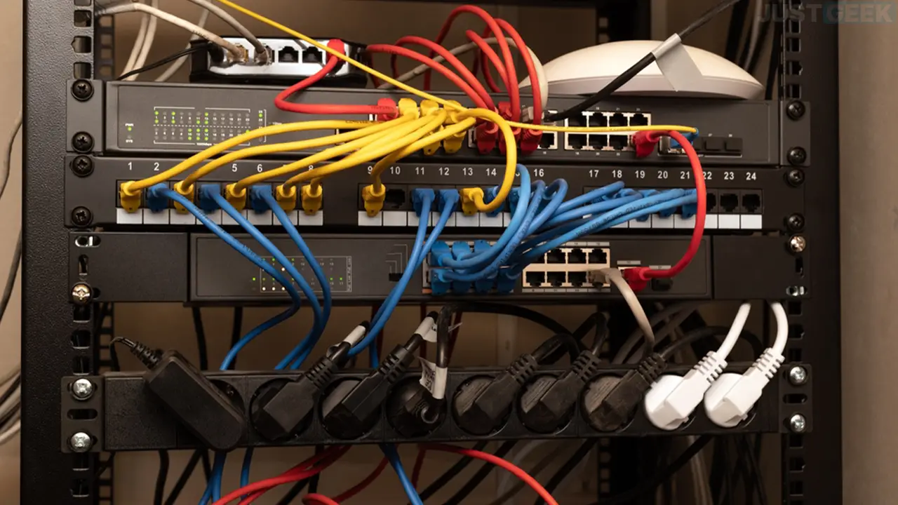
Brassage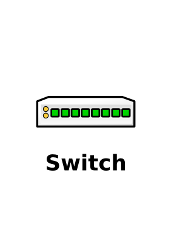
Configuration de switch RGPD
RGPD
 EBIOS Risk Manager
EBIOS Risk Manager
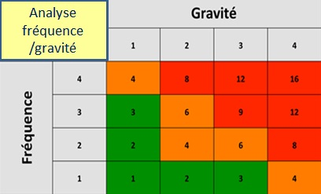
Analyse des risques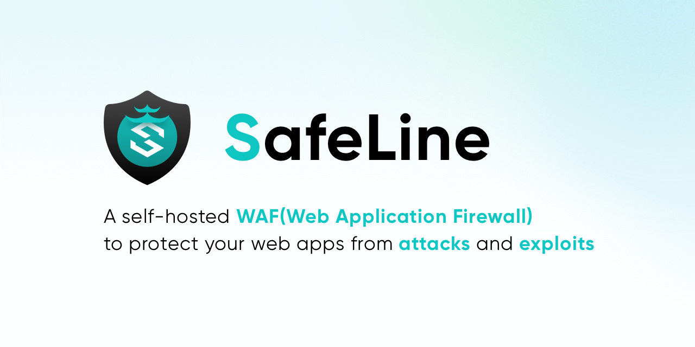
SafeLine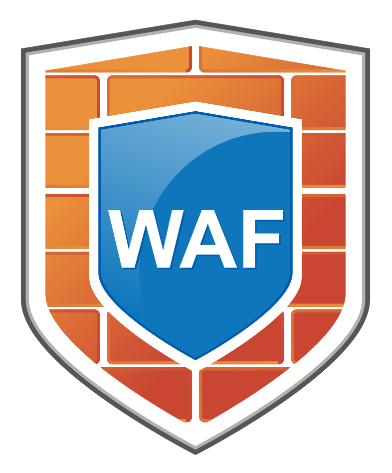
WAF Python
Python

 HTML / CSS
HTML / CSS
 JavaScript
JavaScript
 PHP
PHP
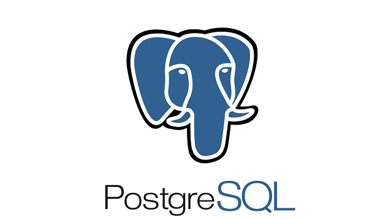
PostgreSQL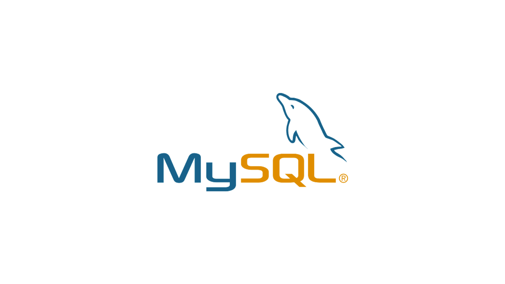
MySQLManipulation des bases de données
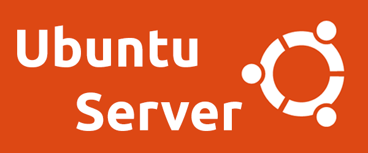
Ubuntu Server 22.04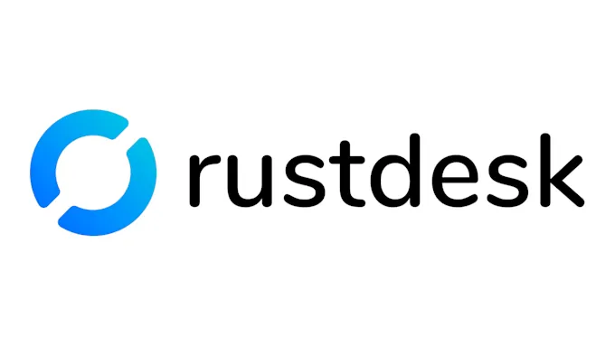
RustDesk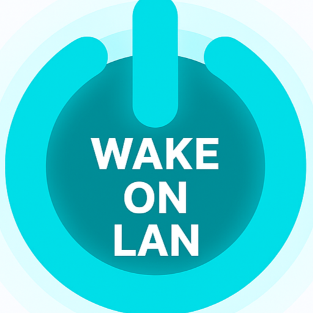
Wake-on-LAN Machine virtuelle
Machine virtuelle
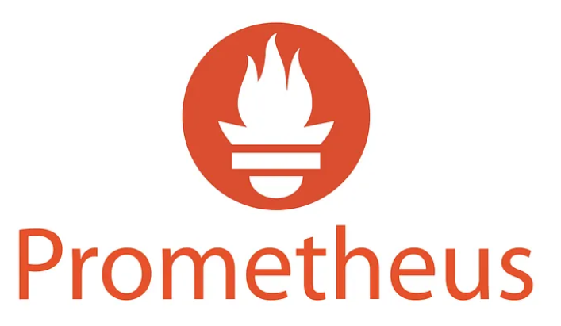
Prometheus.jpg) Odoo
Odoo
Gestion et suivi des tickets
 Anglais
Anglais
 Gestion de projet
Gestion de projet
Réalisation d'un cahier des charges, d'un cahier de recette et d'un cahier de test. (PROJET BOOKINGAUTO)
DocumentLycée Maurice Ravel, 75020 Paris
WETRADE, 75002 Paris
BESTOCAZ, 75000 Paris
SMART LINE, 75015 Paris
Site web personnel moderne développé avec HTML, CSS et JavaScript. Utilise des animations fluides et un design responsive.
Plateforme complète de location de voitures en ligne. Combine infrastructure, réseau, système et développement web (HTML, CSS, PHP, SQL).
Participants :
Conception complète d'une infrastructure réseau avec Cisco PacketTracer. Includes VLANs, routage et sécurité.
Mise en place d'une solution de gestion de parc informatique. Recense les équipements et gère les tickets d'assistance.
Déploiement d'un système d'inventaire automatisé. Collecte les informations matérielles et logicielles des machines du réseau.
Création et administration d'un site web dynamique. Installation, configuration de thèmes/plugins et gestion du contenu.
Installation et configuration d'un serveur web LAMP (Linux, Apache, MySQL, PHP). Déploiement d'applications web et gestion de base de données.
Gestion et suivi des demandes d'assistance informatique avec Odoo. Prise en charge des tickets, diagnostic des incidents et suivi jusqu'à leur résolution.
Maintenance du parc informatique et résolution d'incidents : remplacement de périphériques, dépannage audio, imprimantes, vidéoprojecteurs et postes informatiques.
Mise en place d'une solution de supervision avec Prometheus, Grafana et Windows Exporter afin de surveiller les performances des postes informatiques.
Installation et configuration d'Ubuntu Server 22.04 pour héberger des services conteneurisés et résoudre les problèmes liés à la détection du stockage.
Installation et configuration de Docker et Docker Compose pour déployer et administrer des applications sous forme de conteneurs.
Déploiement de Mattermost sur Ubuntu Server avec Docker et PostgreSQL afin de mettre en place une solution de communication collaborative.
Installation et configuration de SafeLine, un WAF placé devant Mattermost afin d'analyser les requêtes Web et de renforcer la sécurité de l'application.
Nettoyage et optimisation de l'Active Directory : vérification des postes, suppression des anciens équipements et renommage des machines selon leur emplacement.
Déploiement et configuration de RustDesk sur les postes enseignants afin de faciliter la prise en main à distance et le support informatique.
Installation d'Ubuntu sur Windows 11 avec WSL afin d'utiliser les outils et commandes Linux directement depuis l'environnement Windows.
Remplacement et configuration d'un poste dédié à la numérisation, avec installation du logiciel de numérisation et des pilotes du scanner.
Raccordement de prises Ethernet, brassage réseau, installation d'un switch et réalisation de tests de connectivité sur différents équipements de l'établissement.
Un Capture de Flag (CTF) est une activité, généralement organisée sous forme de jeu ou de compétition, dans laquelle les participants doivent résoudre une série de défis afin de retrouver des informations cachées appelées flags.
Ces flags prennent souvent la forme de chaînes de caractères secrètes qui prouvent qu'un défi a été correctement résolu.
Le CTF constitue à la fois un outil pédagogique efficace pour apprendre la cybersécurité de manière concrète et ludique, et un moyen d'évaluer les compétences techniques dans un environnement compétitif.
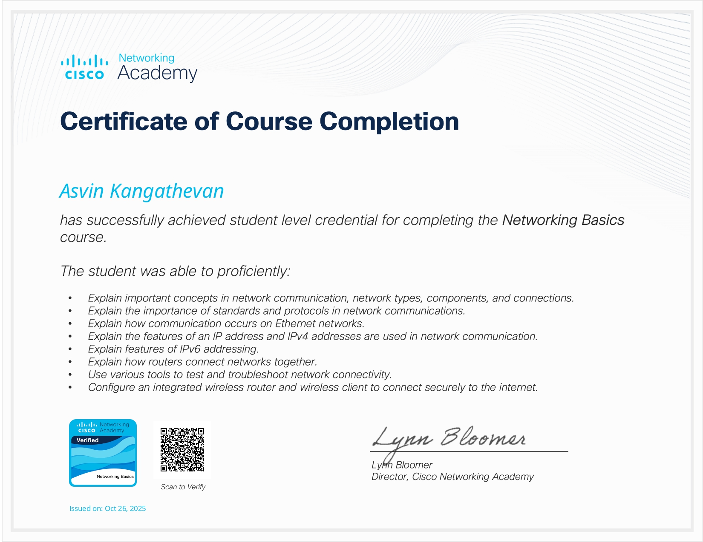


Document récapitulatif présentant l'ensemble de mes compétences techniques, formations et expériences acquises durant mon parcours de formation BTS SIO.
Apache2 et MariaDB sur Linux
Sur Debian 11
Configuration complète CMS
Inventaire réseau automatisé
Liaison LDAP & Windows Server
La virtualisation permet de créer des environnements virtuels (machines virtuelles) qui simulent des ressources matérielles (CPU, mémoire, stockage, réseau) afin d'exécuter plusieurs systèmes et services isolés sur un seul serveur physique.
Nouveautés et versions (VMware ESXi, Hyper-V, KVM, Proxmox, VirtualBox).
Gestion CPU/RAM, stockage virtualisé, I/O réseau.
Isolation des VMs, correctifs, vulnérabilités, chiffrement des disques.
Intégration des VM avec les clouds publics (AWS, Azure, GCP).
Conteneurs vs machines virtuelles et cas d'usage hybrides.
Outils d'orchestration (Terraform, Ansible, vSphere API).
Consolidation des serveurs, économie d'énergie.